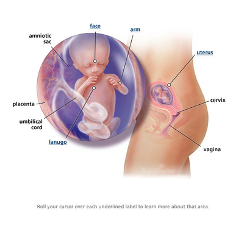
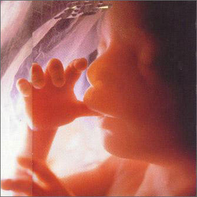

Pada akhir trimester pertama, plasenta berkembang untuk menyediakan oksigen , nutrisi dan pembuangan sampah bayi. Kelopak mata bayi merapat untuk melindungi mata yang sedang berkembang. Janin mencapai panjang 76 mm dan beratnya 19 gram.
Kepala bayi membesar dengan lebih cepat daripada yang lain. Badannya juga semakin membesar untuk mengejar pembesaran kepala.

Minggu ke-14 :
Tiga bulan setelah pembuahan, panjangnya 80-110 mm dan beratnya 25 gram. Lehernya semakin panjang dan kuat. Lanugo, rambut halus yang tumbuh di seluruh tubuh dan melindungi kulit mulai tumbuh pada minggu ini. Kelenjar prostat bayi laki-laki berkembang dan ovarium turun dari rongga perut menuju panggul.
Detak jantung bayi mulai menguat tetapi kulit bayi belum tebal karena belum ada lapisan lemak
 Minggu ke-15 :
Minggu ke-15 :
Bayi sudah mampu menggenggam tangannya dan mengisap ibu jari. Kelopak matanya masih tertutupMinggu ke-16 :
Bayi telah terbentuk sepenuhnya dan membutuhkan nutrisi melalui plasenta. Bayi telah mempunyai tulang yang kuat dan mulai bisa mendengar suara. Dalam proses pembentukan ini system peredaran darah adalah yang pertama terbentuk dan berfungsi.
Janin mulai bergerak ! Tetapi tak perlu kuatir jika Anda tak merasakannya. Semakin banyak kalsium yang disimpan dalam tulang bayi seiring dengan perkembangan kerangka. Bayi Anda berukuran 116 mm dan beratnya 80 gram